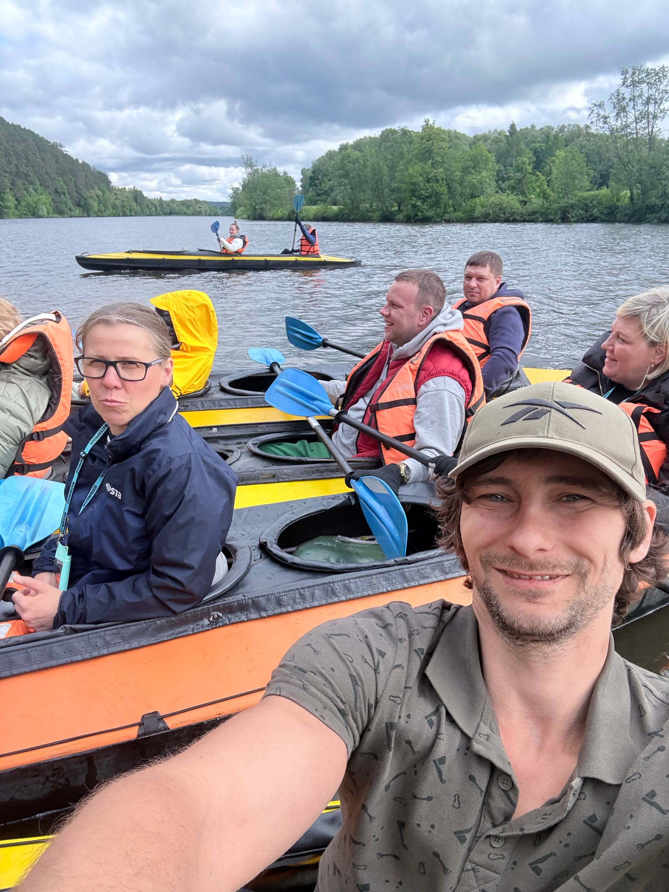
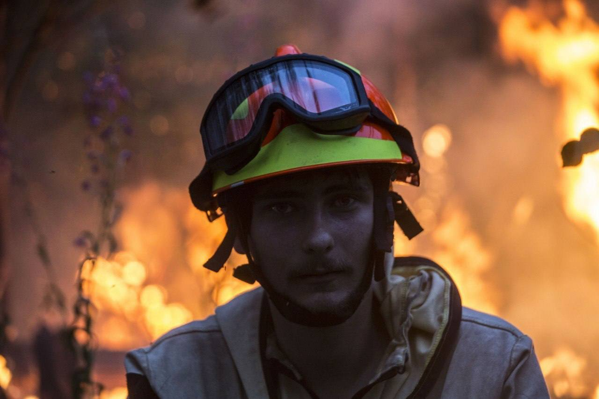
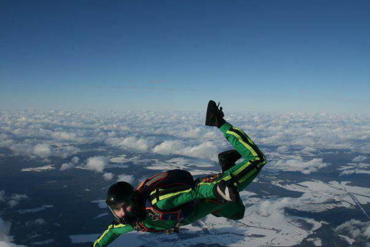
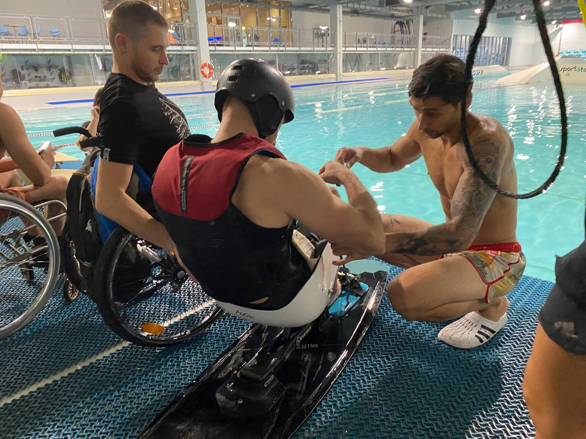

Сдаём в аренду технологичное водное снаряжение для прохождения топовых и красивейших маршрутов региона!
Наш специалист поможет с регулировкой снаряжения и подскажет лучшие локации прямо на воде. Работаем как со своим флотом, так и с арендой от наших партнёров и ближайших лодочных станций. Обеспечиваем заброску гребного транспорта и SUP-досок на самые красивые маршруты региона.

Валерий
Координация команды и ведение корпоративных сплавов.
Полный бэкграунд — скоро.




Алексей Яшаев — бренд-шеф, который вывел кухню на воду
Путь Алексея в профессии классический для настоящего шефа: начинал помощником повара в небольшом кафе, дошёл до бренд-шефа ресторанов Wine&Crab, работал в команде известного шефа Анатолия Комма. Сейчас — шеф-повар Atlantica Seafood, готовил авторский сет «Море внутри» для Московского гастрономического фестиваля.
Специализация — рыба и морепродукты: сухое вызревание, сувид на низких температурах, постоянные поездки в поисках лучшей дикой рыбы. Родители Алексея — фермеры, поэтому отношение к продукту у него с детства: только натуральное, только настоящий вкус. Философия та же, что и на воде: искать скрытый потенциал привычных продуктов и не бояться неожиданных сочетаний.

Максим
Технический специалист команды. Бэкграунд и фото — скоро.
Сплав на максимум: водный флот + BBQ-шеф
Выдаём топовые плавсредства и сапы на 8–10 часов и берём на себя всю кухню. Пока вы проходите маршрут и кайфуете на воде, Алексей разворачивает профессиональный мангальный лагерь на точке финиша или большой стоянки — дегустация и разбор вкусов от практикующего шеф-повара, а не мастер-класс в зале.
Отдельно собираем формат под корпоративных заказчиков: сплав + гастрономическая программа как тимбилдинг под ключ, с логистикой и оборудованием.
Узнать про гастрономический сплав